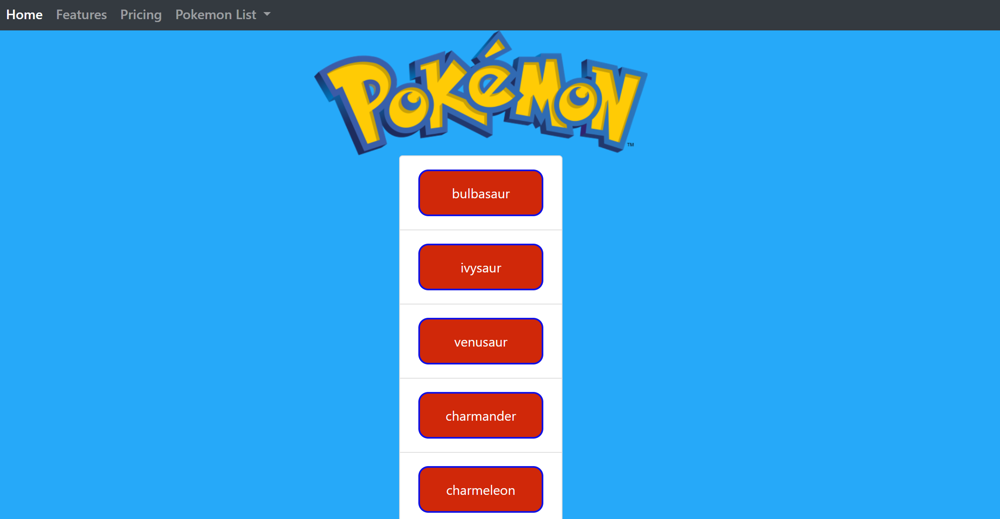
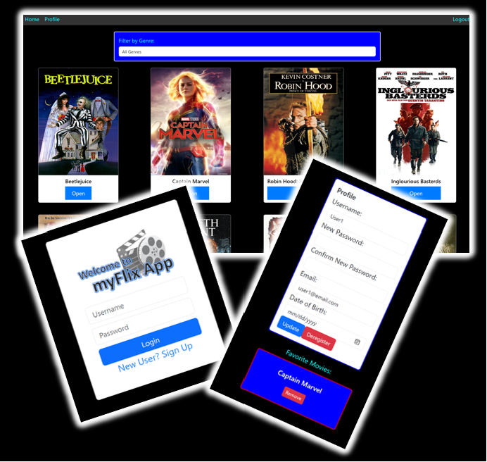
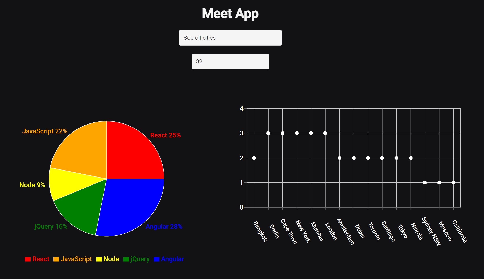
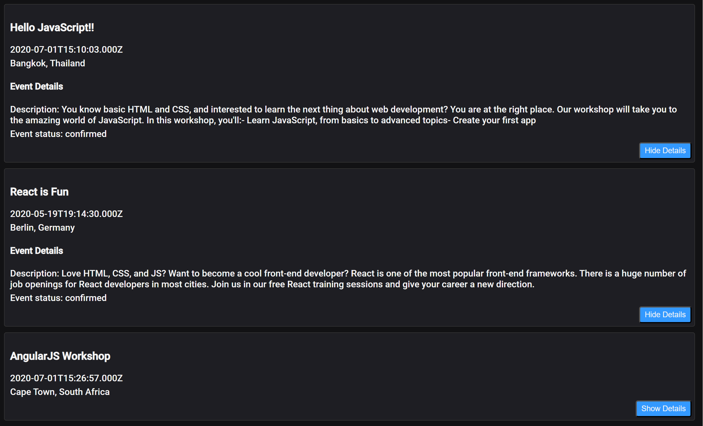
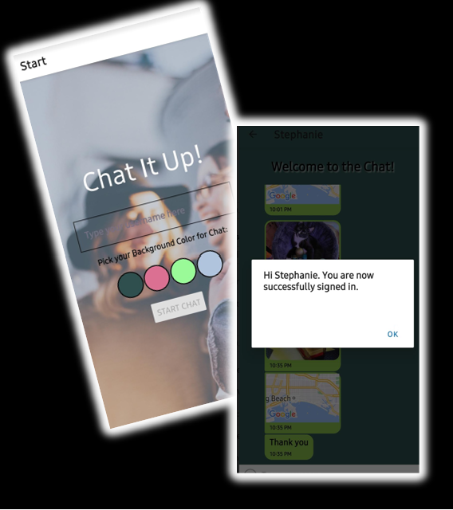
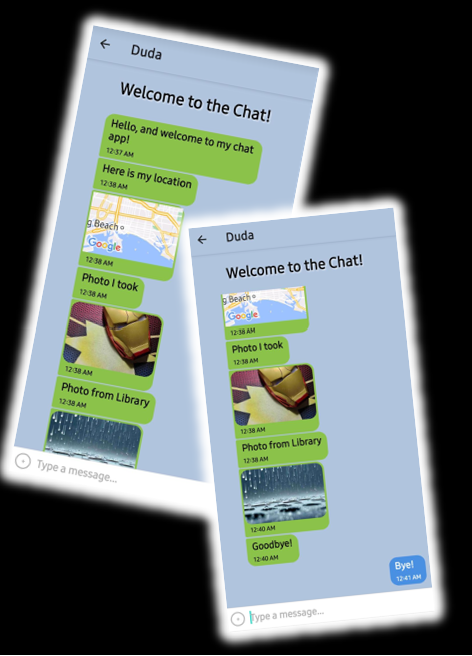
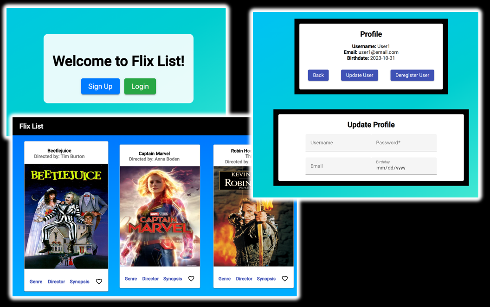
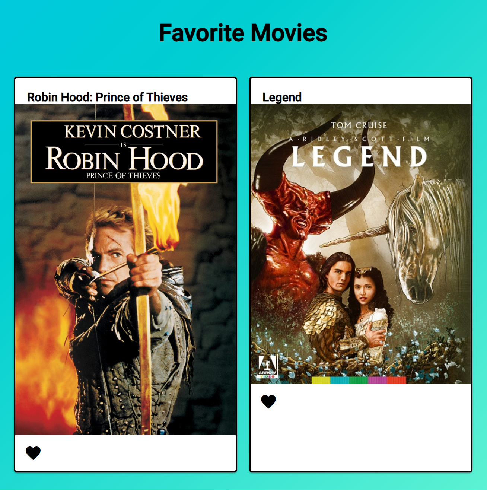

Pokemon Pokedex API
The goal of this project is to build a small web application using HTML, CSS, and JavaScript that loads data from the Pokémon API and enables users to view a list of Pokémon. Users can click on a Pokémon to view more details about it, such as its abilities, types, and image. The app aims to provide a complete, fully functioning JavaScript web application to showcase programming skills, with a focus on data loading from an external API and detailed data viewing.
Technologies Used: HTML, CSS, JavaScript, Pokemon API, ESLint, and Bootstrap.
Project hosted on GitHub
Pokedex API

My Flix Movie API (Server)
The goal of this project is to build the server-side component of a web application called "myFlix" that provides users with access to information about movies, directors, and genres. Users will be able to sign up, update their personal information, and create a list of their favorite movies. The server-side component will be built using JavaScript, Node.js, Express, and MongoDB, following REST architecture principles.
Technologies Used:JavaScript, Node.js, Express, MongoDB, Mongoose, ESLint, Postman, and Heroku.
GitHub Repository for projectMy Flix Movie API (Client)
MyFlix API is a web application that allows users to explore a small collection of movies. Users will be able to create a profile, log in, and see all the movies, descriptions, directors, and genres. They can also add their favorite movies to a list available within their profile. The application consists of both server-side and client-side components, with the server-side providing a REST API for data interaction and the client-side built using React to create an interactive user interface.
Technologies Used:React, React Router, Bootstrap, ES2015+, Parcel, React Redux.
Project hosted on Netlify
MyFlix APIUsername: User1
Password: password1
 Click Here to view Case Study!
Meet App
The goal was to build a serverless, progressive web application (PWA) with React, using a test-driven development (TDD) technique. The application will utilize the Google Calendar API to fetch upcoming events. This approach combines the benefits of serverless architecture and PWAs, offering easy scalability, offline support, and cross-platform compatibility.
Technologies Used: React, AWS Lambda (for serverless functions), Google Calendar API, OAuth2 authentication flow, GIt/GitHub for version control, Parcel, Bootstrap, Lighthouse for PWA checklist, JavaScript.
Project hosted on GitHub
Meet App Project 
Chat App
The project's goal is to build a chat app for mobile devices using React Native, Expo, and Google Firestore Database. The app will provides users with a chat interface and options to share images as well as their location.
Technologies Used: React Native, Expo, Google Firestone Database, Firebase
Authentication, Gifted Chat Library, asyncStorage.
View GitHub Repo for this project
 
Flix List (Angular)
The goal is to build the client-side for the myFlix application using Angular, based on its existing server-side code. The client-side will include several interface views that handle data through REST API endpoints, and the project will be accompanied by comprehensive documentation.
Technologies Used: Angular, Node.js, npm, Angular Material for design, GitHub Pags for hosting, Typedoc, JSDoc
Username: User1
Password: password1
Flix List App 